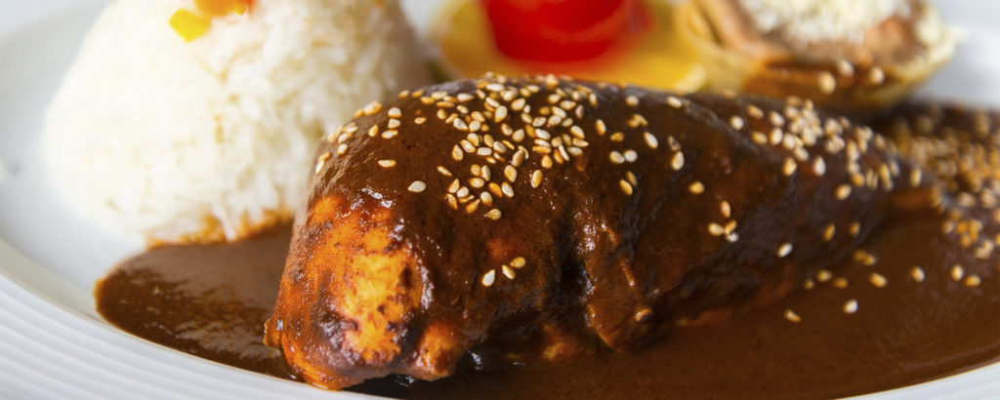

Chicken and Potatoes Mole

Ingredients:
- 500 g of chicken breast
- 300 g of potatoes
- 100 g of mole paste
Instructions:
- Heat water until it boils, then place the pieces of chicken breast in.
- While the chicken cooks, dice the potatoes in medium-size pieces.
- Once the chicken is done, take it out of the boiling water and let ir rest for a moment. Don't throw the chicken broth away! We'll use it later on.
- Once it cooled down, shred the chicken with your hands.
- Put the mole paste on a slightly oiled pan and once it starts cooking pour some chicken broth little by little until the paste completely dissolves in a thick sauce.
- Add the potatoes and let them cook for 15 minutes.
- Turn off the fire and serve with white rice.
Return to main page.